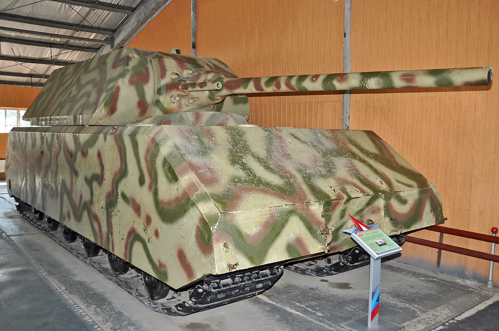
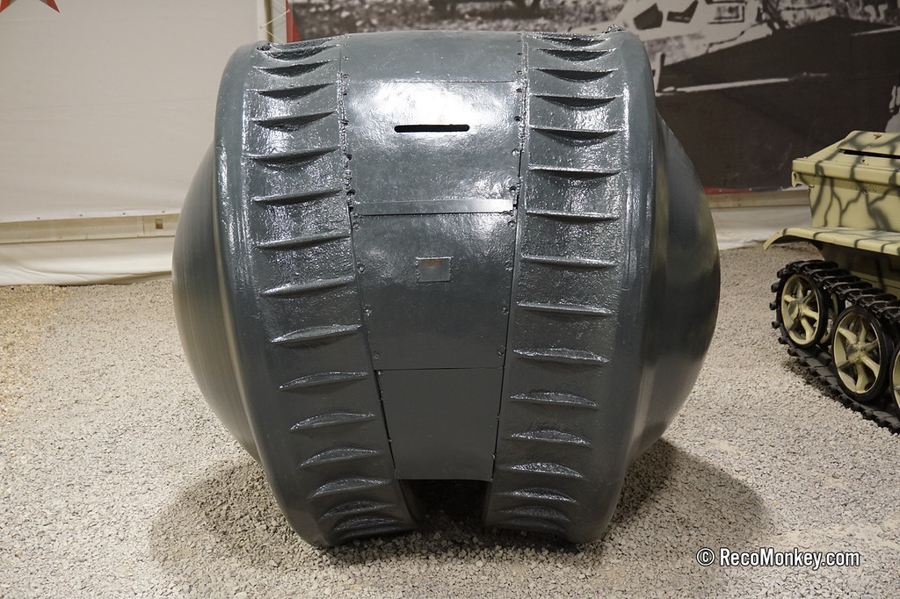
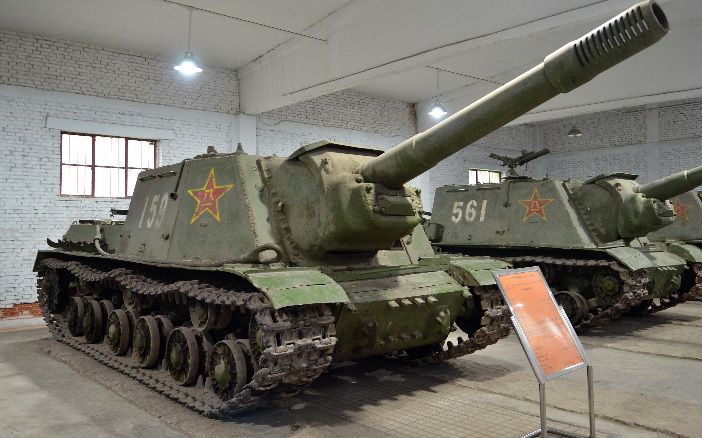

Nesta seção estão alguns dos veículos terrestres mais curiosos, experimentais e incomuns desenvolvidos durante a Segunda Guerra Mundial. Muitos nunca entraram em combate, mas ficaram conhecidos por seus projetos ousados e inovadores.

O Panzer VIII Maus foi o tanque mais pesado já construído. Desenvolvido pela Alemanha, pesava aproximadamente 188 toneladas e possuía uma blindagem extremamente espessa. Apenas dois protótipos foram produzidos antes do fim da guerra.

O Kugelpanzer era um pequeno veículo blindado em formato de esfera. Até hoje sua verdadeira função permanece um mistério, sendo uma das máquinas militares mais estranhas já criadas.

O ISU-152 foi um poderoso veículo blindado soviético equipado com um canhão de 152 mm. Ficou conhecido como "Caçador de Feras" por sua capacidade de destruir tanques pesados alemães, como o Tiger e o Panther. Também era muito eficiente contra fortificações e edifícios.

O T28 Super Heavy Tank foi um tanque experimental dos Estados Unidos, desenvolvido para romper as fortificações alemãs. Possuía uma blindagem extremamente espessa e um enorme canhão de 105 mm. Seu peso elevado dificultava o transporte, e o projeto nunca chegou a participar de combates.

O Sturmtiger foi um veículo de assalto alemão baseado no chassi do Tiger I. Armado com um gigantesco lança-foguetes de 380 mm, era capaz de destruir edifícios, bunkers e posições fortificadas com um único disparo. Apenas dezoito unidades foram produzidas.